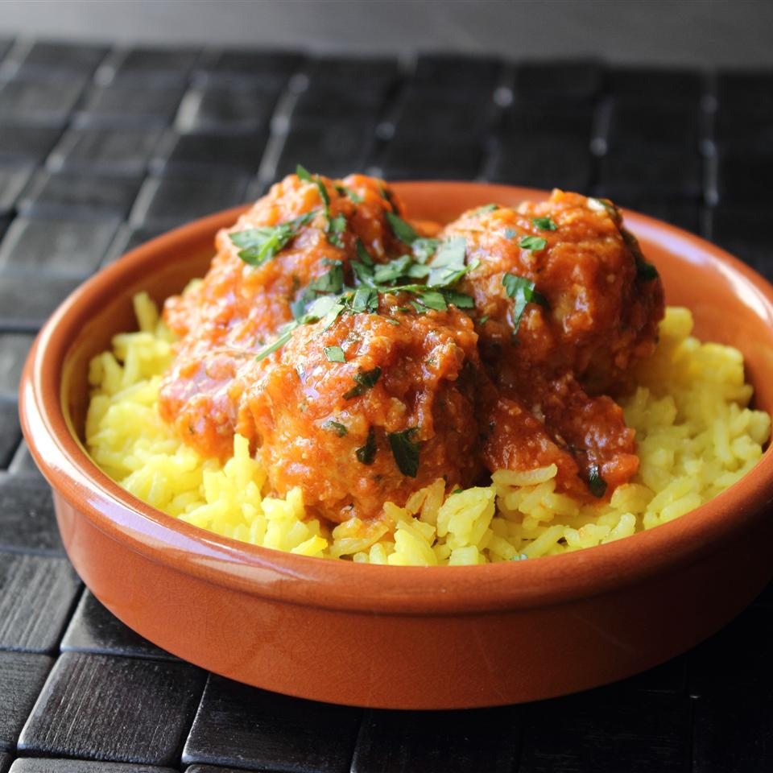

Turkey and rice meatball recipe

Turkey and rice meatball meal
As these turkey and rice meatballs simmer in the sauce,
the rice absorbs moisture, swell ups, and creates a relatively tender, moist meatball.
I didn't intend this recipe to be a Thanksgiving dinner alternative, but now that I think about it,
these could actually work. These are delicious served over saffron basmati rice.
Ingredients
- 1 pound ground turkey thigh meat
- 1 cup packed, cooked white long grain rice
- 3 cloves crushed garlic
- ¼ cup chopped Italian flat leaf parsley
- 1 large egg
- 2 teaspoons kosher salt
- 1 teaspoon smoked paprika
- 1 teaspoon ground cumin
- ½ teaspoon freshly ground black pepper
- ¼ teaspoon dried oregano
- ⅛ teaspoon cayenne pepper
- 1 tablespoon olive oil
- 2½ cups prepared tomato sauce
- 1 cup chicken broth, plus more as needed
- ⅓ cup creme fraiche
- 1 tablespoon sherry vinegar
- 1 teaspoon paprika
- 2 tablespoons chopped Italian flat leaf parsley
- salt and pepper to taste
Preparation steps
- Preheat oven to 450 degrees F. Line a rimmed baking sheet with foil and oil the surface lightly.
- Mix ground turkey, cooked rice, garlic, parsley, egg, salt, paprika, cumin, pepper, oregano,
cayenne, and olive together in a bowl using a fork.
Portion mixture with a small scoop (between 1/4 and 1/3 cup) and place on prepared foil-lined baking sheet.
Use your (wet) hands to form into round meatballs. Bake in preheated oven until browned, about 15 minutes.
-
Pour chicken broth and prepared tomato sauce in a saucepan. Whisk in creme fraiche, sherry vinegar, and paprika.
Transfer meatballs to tomato sauce. Set heat to medium high and bring to a simmer.
Reduce heat to low and simmer until tender, 60 to 90 minutes. If sauce gets too thick, add a splash or 2 of broth or water.
Remove from heat. Stir in parsley, salt, and pepper.